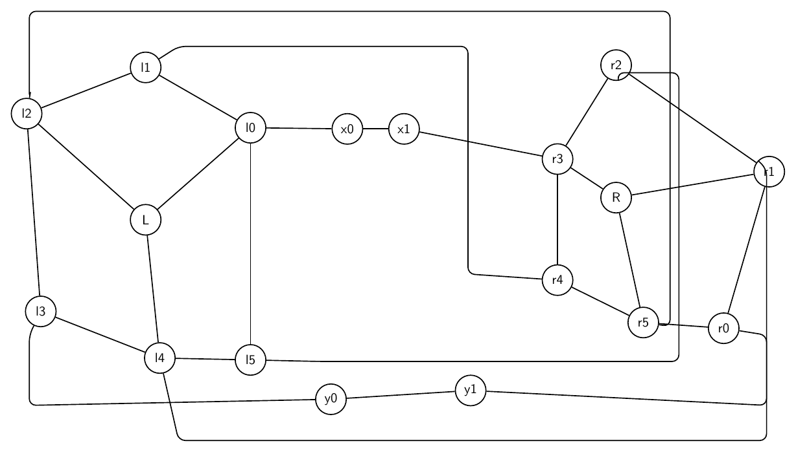
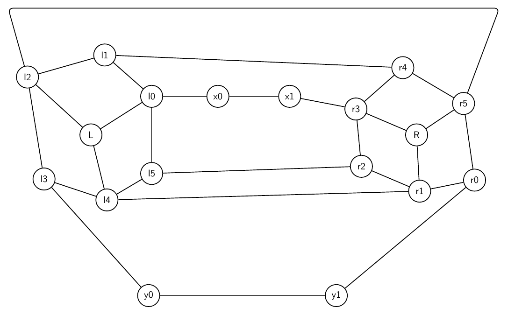

This report records each challenging prompt, validation history, and every rendered iteration image.
Double Crown Bridge
Prompt: Create a complex artificial graph made from two crowns connected by a bridge. The left crown has center L and rim nodes l0,l1,l2,l3,l4,l5 forming a 6-cycle, with L connected to l0,l2,l4 only. The right crown has center R and rim nodes r0,r1,r2,r3,r4,r5 forming a 6-cycle, with R connected to r1,r3,r5 only. Add bridge path l0-x0-x1-r3 and bridge path l3-y0-y1-r0. Add twist matching edges l1-r4, l2-r5, l4-r1, l5-r2. Draw it as two circular clusters with the bridges between them.
Success: True
Structure: 18 nodes, 28 edges.
Warnings:
- Graph macro-relayout by gpt-5.5 at http://localhost:1455/v1.
- Macro relayout coordinate motion: average=2.27, maximum=6.00, moved_fraction=0.83.
- Applied local geometry-aware node-position nudging to reduce node-edge overlap.
Iteration 0
graph_ok: True; layout_ok: False; code_ok: True; render_ok: True; visual_ok: False; visual_score: 4.00; next_refinement: visual_macro_relayout; min_node_dist: `1.48`; min_edge_node_clearance: `0.76`; min_edge_edge_clearance: `0.00`; max_parallel: `6.98`; crossings: `9.00`
Visual issues:
- Several twist/matching edges take very long rectangular detours around the whole drawing, making the semantics hard to read.
- The right-side vertical routed edges run very close to non-incident nodes r0 and r5, especially the l4-r1 and l2-r5 routes.
- The bottom routed l4-r1 edge crowds the y0-y1 bridge path and runs close to the y0/y1 labels for a long visible segment.
- The upper routed l2-r5 edge runs close to r2 and then down near r5, creating avoidable congestion in the right crown.
- Unrelated routed edges on the right side run nearly parallel and close together for long segments, creating visual ambiguity.
- The l1-r4 routed edge forms a large box-like detour through the center/right area instead of a clearer shorter route.
Visual suggestions:
- Move the outer top and bottom routed twist edges farther away from the crowns, or replace them with shorter curved routes through the gap between the two crowns.
- Reroute l4-r1 so its right vertical segment stays well outside r0/r5 and does not crowd the y0-y1 bridge.
- Reroute l2-r5 so it approaches r5 from above/right with more clearance from r2 and r5.
- Separate the right-side vertical channels for l2-r5 and l4-r1, or move r0/r5 slightly inward to increase clearance.
- Consider moving y0 and y1 slightly lower or routing the l4-r1 edge farther below them to keep the bottom bridge visually distinct.
- Use shorter, more direct routes for l1-r4 and l5-r2 through the central gap where possible.
- Edges y1-r0 and l4-r1 run too close together for a long segment: close length 2.43.
- Edges l2-r5 and l5-r2 run too close together for a long segment: close length 6.98.
- Visual review score=4.0: Several twist/matching edges take very long rectangular detours around the whole drawing, making the semantics hard to read.
- Visual review score=4.0: The right-side vertical routed edges run very close to non-incident nodes r0 and r5, especially the l4-r1 and l2-r5 routes.
- Visual review score=4.0: The bottom routed l4-r1 edge crowds the y0-y1 bridge path and runs close to the y0/y1 labels for a long visible segment.
- Visual review score=4.0: The upper routed l2-r5 edge runs close to r2 and then down near r5, creating avoidable congestion in the right crown.
- Visual review score=4.0: Unrelated routed edges on the right side run nearly parallel and close together for long segments, creating visual ambiguity.
- Visual review score=4.0: The l1-r4 routed edge forms a large box-like detour through the center/right area instead of a clearer shorter route.

Iteration 1
graph_ok: True; layout_ok: True; code_ok: True; render_ok: True; visual_ok: True; visual_score: 8.00; next_refinement: None; min_node_dist: `1.88`; min_edge_node_clearance: `0.91`; min_edge_edge_clearance: `0.91`; max_parallel: `0.00`; crossings: `0.00`
